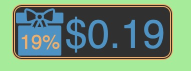
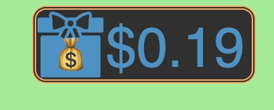
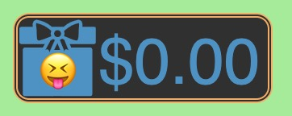

Blindbox.cash is a web wallet for stochastic nanopayment. Here we demonstrate how to use it.
Stochastic Nanopayment
Nanopayments have very small amounts. Usually in each payment, the exchanged value is no more than 0.01 USD. Such a small amount means that blockchain's transaction fee cannot be ignored, even for the blockchains with very low transaction fees. Stochastic nanopayments partly solves this problem. In each time of payment, the payer has a low possibility (such as 1%) to pay the payee a relative large amount (such as 0.5 USD). In most cases, the payer just promised a stochastic nanopayment to the payee, and when the result turns out, the payer does not pay anything at all.
Even through, if a payer continues to pay to many different payees using stochastic nanopayments, she will eventually pay her money out. And if a payee continues to get paid by many different payers, she will eventually get her income.
Stochastic nanopayments are very suitable for the scenarios which have low value but high frequency. For example, read the most valuable part of a article, download a high-resolution picture and play one single round of game.
Internet services are mostly free. But as time going on, more and more people get used to pay for better services. Cryptocurrency, as a borderless international payment system, is very suitable to pay for internet services. Stochastic nanopayment is a field where traditional payment systems have not occupied. So maybe it's a chance for cryptocurrency.
Currently, the wallets' user experience is not optimized for high-frequency low-value scenarios. You must 1) enter the address (scan or paste), 2) enter the amount, 3) enter the password and 4) wait for confirmation. It's too verbose. We hope that stochastic nanopayment can be as simple as one single click.
Some Design Decisions
Stochastic nanopayment was known mainly because of orchid protocol, as a method for paying for VPN tranfic (https://www.orchid.com/assets/whitepaper/whitepaper.pdf). Orchid protocol implements stochastic nanopayment with a smart contract. The basic idea is that possibility is decided by a future random value. When this random value turns out to allow the payee to get the money, the payee broadcasts the transaction. Or the transaction is useless.
But such smart contracts always uses more gas than plain token-transfer transactions. As long as it is possible, we'd like to use plain token-transfer transactions.
Cryptocurrency wallets have different forms: mobile App (such as TrustWallet), desktop App (such as Electron Cash), browser extension (such as MetaMask) and web wallet (such as the wallets provided by read.cash).
A website can implement stochastic nanopayment by making its visitor to sign a transaction with MetaMask, TrustWallet or some other wallets. The visitor only need to click the popup window once. But there is a problem: the wallets require the user to fully trust the website. In most cases, its user cannot understand what the signed transaction will do. We want to support many small websites to use stochastic nanopayment, but it is not possible to let the wallets' users to trust so many small websites.
So, current mobile App wallets and browser extension wallets cannot support stochastic nanopayment directly. And desktop wallets cannot support the one-click experience.
Web wallets uses the per-website "localStorage" provided by the browser to store encrypted private key. They are not so secure because the private keys are easy to get lost or stolen. But they are very handy and flexible. And security is not a big issue when only storing a small amount of funds.
Blindbox.cash is a customized web wallet optimized for stochastic nanopayment, because web wallet is flexible enough to implement the desired user experience.
How it works
Blindbox.cash is a static site deployed on github pages, with www.blindbox.cash as its customized domain name. It does all its job with client-side javascript. The source code of these javascript is open-sourced.
Blindbox.cash is firstly a wallet. You can create wallets with existing or random-generated mnemonic. The mnemonic is entrypted by a password and stored in localStorage. Each time you want to use the wallet, you must unlock it by entering the password.
Currently Blindbox.cash cannot view the balances of coins or transfering coins to other address. In the future it will.
Currently Blindbox.cash can only support stochastic nanopayment. If a website wants its vistor to make a stochastic nanopayment before viewing/downloading/playing something, it must follow the following steps:
1. make a payment button. This button is actually in a border-less iframe whose source is https://www.blindbox.cash/pay.html. Any click to this button is actually captured by the blindbox.cash. A blindbox is drawn in this button, which looks like below:

2. Use some text to inform the visitor: if you want to blablabla, please pay us with this blindbox. If you click on this blindbox, we will have 19% possibility to get 0.19 USD, and 81% possibility to get nothing. No matter we get 0.19 USD or nothing, we'll let you blablabla as long as you click it.
3. The visitor clicks on this button, if there is 0.19 USD in the blindbox, it will look like this:

And if there is nothing in the blindbox, it will look like this:

4. If there is some coins in the blindbox, blindbox.cash will send the signed transaction to the website, which will broadcast the transaction immediately.
How to decide whether there are some coins in the blindbox? By hashing two random byte strings generated by the website and blindbox.cash. The hashed result cannot be decided by any party of the two. So it is fair.
You can try out the payment button at the top of this page.